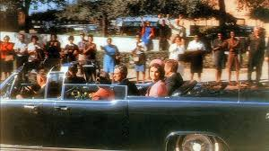

Cette image est le point de départ. Le moment figé avant la faille.
EXTRAIT 1 – Témoignage anonyme
Je reviens sur cette image encore et encore. La foule applaudit, insouciante. Le président sourit. Jackie regarde droit devant elle, figée, presque trop calme.
Mais moi… je regarde le reflet. Là, sur la vitre arrière de la limousine noire. Ce n’est pas un reflet humain. Ça ne peut pas l’être.
J’ai zoomé. Filtré. Stabilisé. Et ce que j’ai vu m’a glacé le sang. Une silhouette fine, allongée, avec des yeux trop larges. Une forme qui n’était dans aucune autre photo officielle, qui ne correspond à aucun des occupants du véhicule.
Je pense que ce n’était pas un homme. Pas un humain.
Les rapports internes de la CIA de 1961 mentionnaient déjà la présence de 'visiteurs'. Des entités capables de se fondre dans la peau humaine. Certains croient qu’ils manipulent les gouvernements depuis des décennies. Qu’ils étaient là quand Kennedy a décidé de révéler certains secrets au public.
Il n’a jamais eu le temps de parler.
EXTRAIT 2 – Enquête parallèle non publiée, 1975
Ce n’était pas une erreur de parcours. Ce n’était pas un malheureux concours de circonstances.
Quand le président Kennedy est monté dans cette Lincoln décapotable ce matin-là, il savait que quelque chose clochait. Il avait demandé à plusieurs reprises que la voiture soit couverte. Refusé.
Le Secret Service a invoqué des raisons de sécurité… puis des questions de visibilité.
Mais dans nos cercles, on le sait : c’était une mise en scène.
Greer, le conducteur, ne s’est jamais retourné. Pas une fois. Même après les premiers coups de feu. Il aurait dû accélérer. Au contraire, il ralentit brièvement.
Sur les enregistrements vidéos (Zapruder, Nix, Muchmore), on distingue une hésitation. Une pause étrange, comme s’il attendait un signal.
J’ai relu les transcriptions radio internes ce jour-là. À 12h30 précises, une communication est enregistrée depuis un canal réservé au personnel de la sécurité intérieure :
'Code-6 validé. Position stable. Condition verte.'
Une minute plus tard, les tirs éclatent.
Cette phrase n’apparaît dans aucune des versions publiques.
Quant au tireur… le monde entier a regardé vers le 'grassy knoll'. Mais c’était une distraction.
Les vrais tireurs étaient positionnés ailleurs, probablement dans le Dal-Tex Building, juste en face du Texas School Book Depository.
C’est là qu’a été retrouvé un étui de balle… non enregistré dans le rapport officiel.
Ce n’était pas Oswald. Ou alors, il n’était pas seul. Et il ne savait pas tout.
Le jour même de son arrestation, il prononce cette phrase : 'Je ne suis qu’un pigeon.'
Deux jours plus tard, Ruby le fait taire pour de bon.
Pourquoi ?
EXTRAIT 3 – Connexion entre niveaux
Le scénario officiel était déjà en place. Une voiture découverte. Une équipe de sécurité divisée. Un tireur isolé. Un plan millimétré, mais humain.
C’est ce que nous pensions.
Jusqu’à ce qu’on tombe sur la photo.
Pas celle du film Zapruder. Une autre, prise depuis l’arrière du cortège, par un photographe amateur qui n’a jamais été identifié.
Le Service Technique a nettoyé l’image. Haute résolution. Lumière retravaillée.
Et là, dans la vitre arrière gauche : une silhouette. Humanoïde, mais allongée. Distorsion ou... camouflage ?
Le technicien chargé de l’analyse, C. Morano, a rendu son rapport puis a quitté son poste le lendemain. Il a disparu six jours plus tard. Sa famille n’a jamais pu déposer de plainte.
Et c’est là que tout a basculé.
Et si le complot politique — celui de Greer, des communications codées, des tireurs dissimulés dans les bâtiments — n’était que la première couche ?
Une diversion ?
Une opération supervisée, oui, mais pas par les hommes que l’on croit.
Dans une note interne non datée, on retrouve une mention du projet 'CHRYSALIS'.
Objectif : test de cohabitation discrète entre entités infiltrées et protocoles de couverture.
Localisation : Texas – Dallas – Zone Alpha 3.
Date d’activation : 22 novembre 1963.
On pensait que la balle venait du Texas School Book Depository.
Mais si le véritable tir n’a jamais été tiré par une arme terrestre ?
Et si l’ombre dans la vitre n'était pas un reflet... mais une observation ?
ÉPILOGUE – Note manuscrite retrouvée
Ce que nous avons vu à Dallas n'était pas un assassinat. C'était un rituel de silence. Une démonstration de pouvoir.
Il y avait plus que la politique ce jour-là. Il y avait un avertissement.
À ceux qui voulaient trop en dire.
À ceux qui pensaient pouvoir faire la lumière.
Il reste cette photo.
Ce reflet.
Et la certitude qu’au moment même où Kennedy a souri à la foule… quelqu’un — ou quelque chose — le regardait déjà mourir.